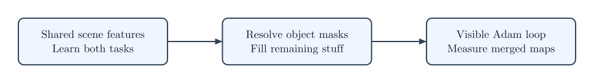
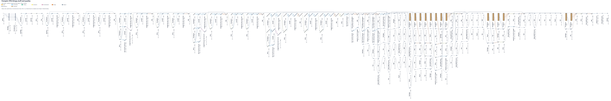
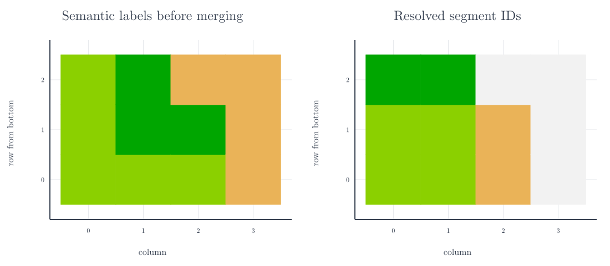
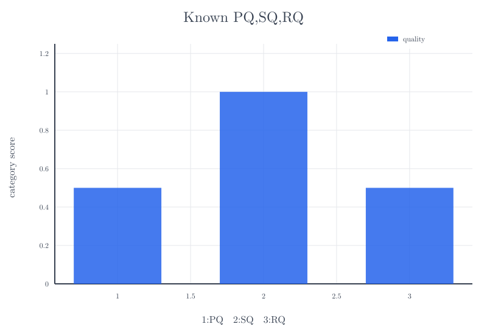
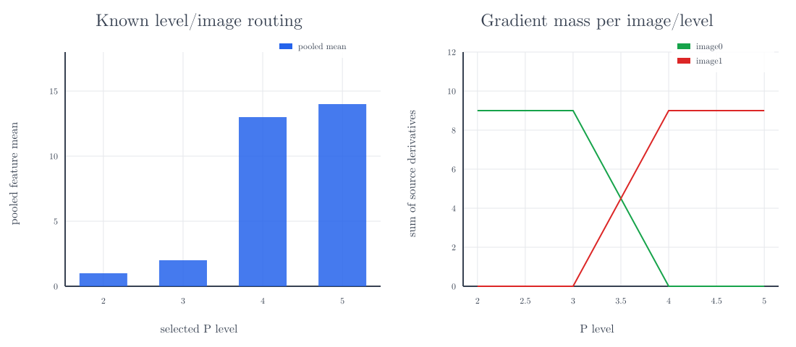
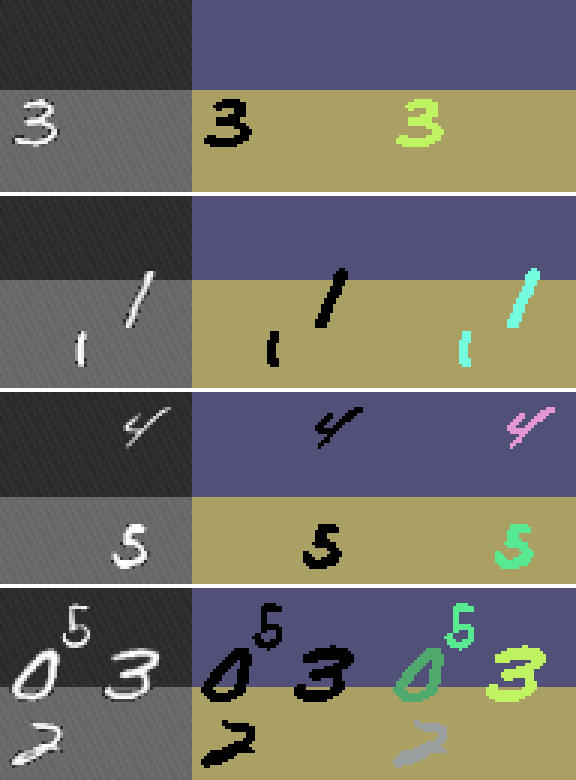
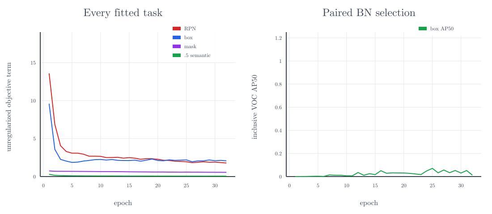
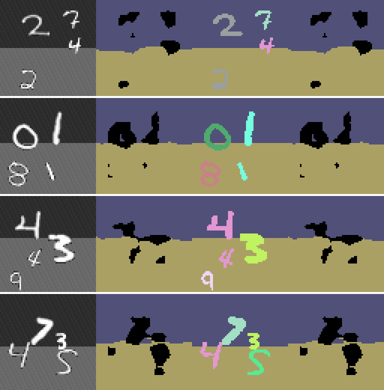
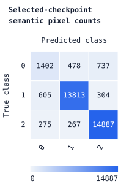

Panoptic FPN things,stuff and quality
Abstract
A complete scene description must assign material labels to background pixels while separating each countable object. Panoptic FPN shares features between semantic and instance branches. This report checks overlap resolution and panoptic quality,then visibly fits the complete compact tensor model and inspects actual merged held-out maps.
Source example: examples/cpp/source/nn/1_convolutional_neural_networks/1.7_segmentation/panoptic_fpn.cpp.
The method
Shared multiscale features train region proposals,aligned box/mask heads and a group-normalized semantic path. Scored instances claim pixels before semantic stuff fills gaps. Strict-IoU panoptic statistics handle void/crowd and aggregate category counts before quality averages.
The concept diagram below is drawn by dm::graphics::Diagram. Its editable C++
source is the complete block below; regeneration uses the same datamunge toolchain
as the numerical examples. Exports consume the saved local SVG.
#include <dm/dm.hpp>
int main() {
std::filesystem::create_directories("build");
dm::graphics::Diagram diagram;
diagram.node("n0", {0.0, 0}, "Shared scene features\nLearn both tasks");
diagram.node("n1", {5.2, 0}, "Resolve object masks\nFill remaining stuff");
diagram.node("n2", {10.4, 0}, "Visible Adam loop\nMeasure merged maps");
diagram.edge("n0", "n1").edge("n1", "n2");
diagram.save_svg("build/panoptic_fpn_concept.svg");
}
Executed tensor architecture
This figure executes the inference configuration shown in the code, using a zero-valued shape probe without fitting or loading a checkpoint. Named stage boundaries group whole subgraphs where available; other nodes retain functional-layer detail. Exact batch-inclusive shapes and reachable parameter totals come from the trace. Shared linear scales map spatial dimensions and channel counts to blocks; the one-pixel visibility floor is disclosed in the legend. Labels use compact monospace text, rotate counterclockwise and sit beside their own glyphs. Arrows flow left to right; wide diagrams scroll at native size on the website.
#include <dm/dm.hpp>
int main() {
namespace n = dm::nn;
namespace m = n::models;
n::set_num_threads(2);
std::filesystem::create_directories("build");
m::PanopticConfig cfg;
n::ParameterStore p(17), state(18);
cfg.size = 64;
cfg.depth = 18;
cfg.divisor = 8;
cfg.width = 32;
cfg.semantic_width = 16;
cfg.groups = 8;
cfg.semantic_classes = 3;
cfg.grayscale = true;
n::Module architecture_model(
[&](const n::Tensor& image) { return m::PanopticBackbone(p, state, image, cfg).semantic; },
"Panoptic FPN things,stuff and quality");
n::ModelPlotOptions options;
options.style = n::ModelPlotStyle::Flow;
options.detail = n::ModelPlotDetail::Blocks;
options.labels = {.type = n::ModelPlotLabel::NameAndShape, .size = 12, .wrap = 24};
options.spacing = {.layer = 24, .lane = 12, .label = 8, .margin = 20};
options.sizing.spatial_size = 96;
options.sizing.channel_size = 42;
options.sizing.minimum_extent = 1;
options.opacity = .8;
const auto diagram = architecture_model.plot(n::zeros({2, 64, 64, 1}), options);
diagram.save_svg("build/panoptic_fpn_architecture.svg");
std::print(
"{} displayed nodes; {} reachable learned values.\n",
diagram.nodes().size(),
diagram.parameter_count());
}236 displayed nodes; 243291 reachable learned values.

Resolve thing overlaps before filling stuff
Panoptic output gives every nonvoid pixel exactly one segment ID and a category. Countable objects are things;materials such as ground are stuff. The instance branch supplies scored thing masks,and the semantic branch supplies stuff labels. In descending score order,an instance is rejected if its already-claimed fraction exceeds.5;otherwise its claimed pixels are trimmed. Score equality.5 is retained, and overlap equality.5 is accepted. Empty or fully consumed masks create no segment. Stuff categories then claim remaining pixels when their area is at least32. Unclaimed pixels remain void0.
The hand-check below uses a3x4 grid and minimum stuff area2. Mask A claims four pixels;mask B shares two of its four pixels with A and retains its two unclaimed pixels. A third heavily overlapping mask is rejected. The remaining four-pixel stuff region survives while the one-pixel stuff region becomes void. The exact output IDs are printed as a table;catalogue categories remain separate from these arbitrary segment IDs.
#include <dm/dm.hpp>
int main() {
namespace n = dm::nn;
namespace m = n::models;
const auto semantic =
n::from_vector(std::vector<std::int64_t>{1, 1, 1, 2, 1, 0, 0, 2, 1, 0, 2, 2}, {3, 4});
std::vector<int> supports(48);
for (const int i : {0, 1, 4, 5})
supports[i] = 1;
for (const int i : {1, 2, 5, 6})
supports[12 + i] = 1;
for (const int i : {0, 1, 4})
supports[24 + i] = 1;
supports[47] = 1;
m::TensorMaskDetections masks{{n::zeros({4, 4}), n::tensor({.9, .8, .7, .49}),
n::from_vector(std::vector<std::int64_t>{3, 4, 5, 6}),
n::zeros({4}, n::DType::Int64)},
n::not_equal(n::from_vector(supports, {4, 3, 4}), 0.)};
const auto out = m::MergeTensorPanoptic(semantic, masks, {-1, 10, 11}, .5, .5, 2);
const auto ids = out.ids.to_vector<int>();
if (ids != std::vector<int>{1, 1, 2, 3, 1, 1, 2, 3, 0, 0, 3, 3})
return 1;
auto a = n::plot_tensor_map(n::reverse(semantic.to(n::DType::Float32), {0}), 0, 3),
b = n::plot_tensor_map(n::reverse(out.ids.to(n::DType::Float32), {0}), 0, 3);
a.title("Semantic labels before merging");
b.title("Resolved segment IDs");
std::filesystem::create_directories("build");
dm::graphics::RLayout::create(1, 2).add(a).add(b).size(1100, 480).fit_panels().save_svg(
"build/panoptic_fpn_merge.svg");
std::print("| row | column0 | column1 | column2 | column3 |\n|---:|---:|---:|---:|---:|\n");
for (int row = 0; row < 3; ++row)
std::print("| {} | {} | {} | {} | {} |\n", row, ids[row * 4], ids[row * 4 + 1],
ids[row * 4 + 2], ids[row * 4 + 3]);
std::print(
"Segment1:thing category3;segment2:thing category4;segment3:stuff category11. Exact "
"overlap equality.5 trims and accepts the second mask. No model or fitting.\n");
}| row | column0 | column1 | column2 | column3 |
|---|---|---|---|---|
| 0 | 1 | 1 | 2 | 3 |
| 1 | 1 | 1 | 2 | 3 |
| 2 | 0 | 0 | 3 | 3 |
Segment1:thing category3;segment2:thing category4;segment3:stuff category11. Exact overlap equality.5 trims and accepts the second mask. No model or fitting.

Panoptic quality separates recognition from support accuracy
For a category,only same-category segments at strict IoU greater than.5 match. Ground-truth void pixels inside a prediction are removed from its match union. Crowd truth never counts as an ordinary match or false negative;an unmatched prediction mostly inside void or same-category crowd is ignored. These rules are checked independently in the native fixtures,including exact-IoU.5 rejection. For one category,
Sum category counts over images before macro-averaging categories with any TP/FP/FN. Per-category PQ equals SQ times RQ,but separately macro-averaged SQ and RQ need not multiply to macro PQ. Here one three-pixel segment matches perfectly and another three-pixel truth has only one predicted pixel:TP=1, FP=1,FN=1,matched IoU=1,PQ=.5,SQ=1,RQ=.5. Segment IDs differ between maps; matching uses category and support,not ID equality.
#include <dm/dm.hpp>
int main() {
namespace n = dm::nn;
namespace m = n::models;
m::TensorPanopticMap truth{
n::from_vector(std::vector<std::int64_t>{1, 1, 1, 2, 2, 2}, {1, 6}),
{{1, {0, true, false}}, {2, {0, true, false}}}},
predicted{n::from_vector(std::vector<std::int64_t>{3, 3, 3, 4, 0, 0}, {1, 6}),
{{3, {0, true, false}}, {4, {0, true, false}}}};
const auto stats = m::PanopticStatistics(truth, predicted, 1);
const auto q = m::PanopticQuality(stats, n::ones({1}, n::DType::Bool));
if (q.pq.item() != .5 || q.sq.item() != 1 || q.rq.item() != .5)
return 1;
auto p = dm::graphics::RPlot::create();
p.bars({1, 2, 3}, {q.pq.item(), q.sq.item(), q.rq.item()}, "quality", {37, 99, 235}, .6)
.title("Known PQ,SQ,RQ")
.x_label("1:PQ 2:SQ 3:RQ")
.y_label("category score")
.y_limits(0, 1.25)
.size(800, 550);
std::filesystem::create_directories("build");
p.save_svg("build/panoptic_fpn_quality.svg");
std::print("Matched IoU1,TP1,FP1,FN1 -> PQ {:.3f},SQ {:.3f},RQ {:.3f}. Strict "
"IoU>.5;void/crowd/empty-map fixtures pass independently.\n",
q.pq.item(), q.sq.item(), q.rq.item());
}Matched IoU1,TP1,FP1,FN1 -> PQ 0.500,SQ 1.000,RQ 0.500. Strict IoU>.5;void/crowd/empty-map fixtures pass independently.

Route each aligned region to its own feature scale
The instance heads choose level \(\operatorname{clip}(\lfloor4+\log_2(\sqrt{wh}/s_0)\rfloor,2,5)\). With canonical side32,boxes of side8/16/32/64 route to P2/P3/P4/P5. Constant feature maps expose this choice exactly. Batch0 maps contain1/2/3/4;batch1 contains11/12/13/14. Regions from batch indices0/0/1/1 must return1/2/13/14. Every3x3 pooled region has total derivative9 only on its selected image/level, and zero on the other image. The report shows mean outputs;native checks verify every pooled value and image/level derivative sum.
#include <dm/dm.hpp>
int main() {
namespace n = dm::nn;
namespace m = n::models;
std::vector<n::Tensor> features;
for (int level = 0; level < 4; ++level) {
const int side = 16 >> level;
features.push_back(n::concat({n::full({1, side, side, 1}, double(level + 1)),
n::full({1, side, side, 1}, double(level + 11))},
0)
.requires_grad_());
}
const auto boxes = n::tensor(
{0., 0., 8., 8., 0., 0., 16., 16., 0., 0., 32., 32., 0., 0., 64., 64.},
{4, 4}),
indices = n::from_vector(std::vector<std::int64_t>{0, 0, 1, 1});
const auto output = m::PanopticRoiAlign(features, boxes, indices, 64, 3, 32);
const auto mean = n::mean(output, {1, 2, 3});
const auto g = n::grad(n::sum(output), features);
std::vector<double> first, second;
for (const auto &v : g) {
const auto sums = n::sum(v, {1, 2, 3}).to_vector<double>();
first.push_back(sums[0]);
second.push_back(sums[1]);
}
auto a = dm::graphics::RPlot::create(), b = dm::graphics::RPlot::create();
a.bars({2, 3, 4, 5}, mean.to_vector<double>(), "pooled mean", {37, 99, 235}, .6)
.title("Known level/image routing")
.x_label("selected P level")
.y_label("pooled feature mean")
.y_limits(0, 18);
b.lines({2, 3, 4, 5}, first, "image0", {22, 163, 74})
.lines({2, 3, 4, 5}, second, "image1", {220, 38, 38})
.title("Gradient mass per image/level")
.x_label("P level")
.y_label("sum of source derivatives")
.y_limits(0, 12);
std::filesystem::create_directories("build");
dm::graphics::RLayout::create(1, 2).add(a).add(b).size(1100, 480).fit_panels().save_svg(
"build/panoptic_fpn_routing.svg");
std::print("P2/P3/P4/P5 means1/2/13/14;selected-image derivative mass9 per "
"region,other-image mass0. No fitting.\n");
}P2/P3/P4/P5 means1/2/13/14;selected-image derivative mass9 per region,other-image mass0. No fitting.

Full shared architecture and initialized gradient census
The source full model shares ResNet50/FPN256 between RPN/aligned box/mask heads and a GN32 semantic branch of width128. P2/P3/P4/P5 semantic paths use1/1/2/3 3x3/GN/ReLU stages,bilinearly upsample to stride4,and sum before linear scores. GN has no moving state;ResNet BN does. The complete full256px graph has 46,027,110 learned scalars/all224 gradients. It includes80 foreground instance classes and54 semantic classes,hidden1024 box head and mask width256.
Compact64px uses ResNet18/divisor8,FPN32,GN8 semantic width16/three classes, RPN hidden32,box hidden128/11 classes and mask width16/ten foreground classes. All489,751 learned scalars and125 parameter gradients remain active. The full initialized execution below checks architecture and differentiation;only the complete compact model is fitted later.
#include <dm/dm.hpp>
int main() {
namespace n = dm::nn;
namespace m = n::models;
n::set_num_threads(2);
for (bool compact : {false, true}) {
n::ParameterStore p(17), state(18);
m::PanopticConfig cfg;
if (compact) {
cfg.size = 64;
cfg.depth = 18;
cfg.divisor = 8;
cfg.width = 32;
cfg.semantic_width = 16;
cfg.groups = 8;
cfg.semantic_classes = 3;
cfg.grayscale = true;
}
const int batch = compact ? 2 : 1, channels = compact ? 1 : 3, side = cfg.size;
const auto image = n::sin(.13 * n::arange(0, batch * side * side * channels))
.reshape({batch, side, side, channels});
const auto features = m::PanopticBackbone(p, state, image, cfg, true);
const auto rpn = m::BuildPanopticRpn(p, features, compact ? 32 : 256);
const double s = compact ? 1. : 4.;
const auto boxes = n::tensor({0., 0., 8. * s, 8. * s, 0., 0., 16. * s, 16. * s, 0., 0.,
32. * s, 32. * s, 0., 0., 64. * s, 64. * s},
{4, 4});
const auto indices = n::from_vector(compact ? std::vector<std::int64_t>{0, 0, 1, 1}
: std::vector<std::int64_t>{0, 0, 0, 0});
const auto head = m::PooledDetectionRoiHead(
p, m::PanopticRoiAlign(features.pyramid, boxes, indices, side, 7, compact ? 32 : 224),
compact ? 11 : 81, compact ? 128 : 1024);
const auto masks = m::MaskRcnnHead(
p, m::PanopticRoiAlign(features.pyramid, boxes, indices, side, 14, compact ? 32 : 224),
compact ? 16 : 256, compact ? 10 : 80);
auto loss = n::zeros({});
for (const auto &value : {features.semantic, rpn.objectness, rpn.deltas,
head.probabilities, head.deltas, masks})
loss = loss + n::mean(n::square(value));
const auto gradient = n::grad(loss, p.parameters());
for (const auto &g : gradient)
if (!g.defined() || !std::isfinite(n::sum(n::square(g.to(n::DType::Float64))).item()) ||
(compact && n::sum(n::square(g)).item() <= 0))
return 1;
if (p.count() != (compact ? 489751 : 46027110) ||
gradient.size() != std::size_t(compact ? 125 : 224))
return 1;
std::print("{} complete Panoptic FPN:{} learned/{} BN state scalars,all{} gradients "
"at{}px. GN semantic state is learned affine only,no moving moments.\n",
compact ? "Compact" : "Full", p.count(), state.count(), gradient.size(), side);
}
}Full complete Panoptic FPN:46027110 learned/53120 BN state scalars,all224 gradients at256px. GN semantic state is learned affine only,no moving moments. Compact complete Panoptic FPN:489751 learned/1200 BN state scalars,all125 gradients at64px. GN semantic state is learned affine only,no moving moments.
Actual objects over textured materials
First2048 training-source MNIST digits generate64 fitting/16 validation scenes, seed11. First512 test-source digits generate eight test scenes,seed22. Digits retain individual resampled-byte>32 supports,boxes,classes and intensities. Only nonsupport pixels receive two textured materials,with byte bases40/100 and deterministic0..10 variation. A near-midpoint material split varies by scene. Semantic targets are0 all things,1/2 the two materials;panoptic categories are 0..9 digits and10/11 materials. Native all-pixel checks ensure supports and intensities survive synthesis and the stuff target matches its photometry. This deliberately easy material cue is a teaching task,not a realistic scene or a benchmark segmentation dataset.
#include <dm/dm.hpp>
int main() {
namespace n = dm::nn;
namespace m = n::models;
std::filesystem::path cache;
if (const auto *p = std::getenv("DATAMUNGE_DATA_DIR"))
cache = p;
else if (const auto *p = std::getenv("XDG_CACHE_HOME"))
cache = std::filesystem::path(p) / "datamunge/datasets";
else
cache = std::filesystem::path(std::getenv("HOME")) / ".cache/datamunge/datasets";
dm::datasets::fetch("mnist", (cache / "mnist").string());
const auto digits = n::load_mnist((cache / "mnist").string(), "train");
const auto data =
m::MakeTensorPanopticScenes(n::slice_axis(digits.images, 0, 0, 2048),
n::slice_axis(digits.labels, 0, 0, 2048), 80, 11);
std::vector<n::Tensor> sheet;
for (int row = 0; row < 4; ++row) {
const auto input =
n::slice_axis(data.instances.images, 0, row, row + 1) * n::ones({1, 1, 1, 3});
const auto target = n::slice_axis(data.semantic, 0, row, row + 1);
const auto categories = n::where(n::equal(target, 0.), n::full({}, -1., n::DType::Int64),
target + n::full({}, 9., n::DType::Int64));
sheet.push_back(
n::concat({input, m::ColorPanopticCategories(categories),
m::ColorPanopticMap(data.panoptic[row]).reshape({1, 64, 64, 3})},
2));
}
std::filesystem::create_directories("build");
n::save_image_grid(n::concat(sheet, 0), "build/panoptic_fpn_data.png", 1, 0, 1, 4, 1., 3);
std::print("80 actual textured64px scenes:64 fit/16 validation. Each row is input,semantic "
"target,panoptic truth. Semantic0 all things is black;stuff10 blue-grey/stuff11 "
"tan,digits retain their ten-class palette. Texture never redefines the original "
"object supports.\n");
}80 actual textured64px scenes:64 fit/16 validation. Each row is input,semantic target,panoptic truth. Semantic0 all things is black;stuff10 blue-grey/stuff11 tan,digits retain their ten-class palette. Texture never redefines the original object supports.

Explicit four-task optimization and paired restoration
Warm all leaves before Adam(.001),then fit512 visible updates,32epochs/batch4. Each training forward updates ResNet BN once. Shared FPN features supply 1023-anchor RPN proposals,32 sampled RoIs/image(at most one-quarter positive), aligned box/mask losses and three-class semantic CE. The objective is RPN logistic/Smooth-L1 + box CE/selected Smooth-L1 + positive selected-mask BCE
- .5 semantic CE with unit class weights,plus explicit
.00005*sum(kernel²).
Every bias,GN/BN affine parameter and learned head remains optimized.
Validation box AP50 selects paired learned/BN stores,as in the source. Both restore and reproduce the selected validation score before testing. No truth region is inserted at test time. Predicted semantic stuff and learned masks merge at instance score>.5,overlap<.5 and minimum stuff area32. Dataset PQ adds per-category IoU/TP/FP/FN before macro averaging;things/stuff scores stay separate. Integral mask AP remains distinct from official COCO mask AP.
#include <dm/dm.hpp>
int main() {
namespace n = dm::nn;
namespace m = n::models;
n::set_num_threads(2);
std::filesystem::path cache;
if (const auto *p = std::getenv("DATAMUNGE_DATA_DIR"))
cache = p;
else if (const auto *p = std::getenv("XDG_CACHE_HOME"))
cache = std::filesystem::path(p) / "datamunge/datasets";
else
cache = std::filesystem::path(std::getenv("HOME")) / ".cache/datamunge/datasets";
dm::datasets::fetch("mnist", (cache / "mnist").string());
const auto digits = n::load_mnist((cache / "mnist").string(), "train");
const auto data =
m::MakeTensorPanopticScenes(n::slice_axis(digits.images, 0, 0, 2048),
n::slice_axis(digits.labels, 0, 0, 2048), 80, 11);
const auto &scenes = data.instances;
const auto anchors = m::CompactPanopticAnchors();
m::PanopticConfig cfg;
cfg.size = 64;
cfg.depth = 18;
cfg.divisor = 8;
cfg.width = 32;
cfg.semantic_width = 16;
cfg.groups = 8;
cfg.semantic_classes = 3;
cfg.grayscale = true;
std::vector<std::int64_t> val_rows(16);
std::iota(val_rows.begin(), val_rows.end(), 64);
n::ParameterStore p(17), state(18);
// Warm every backbone,FPN,semantic,RPN,box and mask leaf before Adam.
{
n::NoGradGuard guard;
const auto f = m::PanopticBackbone(p, state, n::zeros({2, 64, 64, 1}), cfg);
m::BuildPanopticRpn(p, f, 32);
const auto boxes = n::tensor({0., 0., 16., 16.}, {1, 4}),
ids = n::zeros({1}, n::DType::Int64);
m::PooledDetectionRoiHead(p, m::PanopticRoiAlign(f.pyramid, boxes, ids, 64, 7, 32), 11,
128);
m::MaskRcnnHead(p, m::PanopticRoiAlign(f.pyramid, boxes, ids, 64, 14, 32), 16, 10);
}
if (p.count() != 489751)
return 1;
const auto truth_records = [](const m::TensorInstanceScenes &scenes,
const std::vector<std::int64_t> &rows) {
std::vector<m::DetectionEvaluationTruth> result;
for (const auto row : rows) {
const auto boxes = n::boxes_to_vector(scenes.boxes[row]);
const auto labels = scenes.labels[row].to_vector<int>();
for (std::size_t k = 0; k < boxes.size(); ++k)
result.push_back({int(row), labels[k], boxes[k]});
}
return result;
};
const auto predict = [&](const m::TensorInstanceScenes &scenes,
const std::vector<std::int64_t> &rows) {
n::NoGradGuard guard;
const auto f = m::PanopticBackbone(
p, state, 2. * n::gather(scenes.images, n::from_vector(rows)) - 1., cfg, false);
const auto rpn = m::BuildPanopticRpn(p, f, 32);
return std::make_pair(m::DecodeCompactPanopticInstances(p, f, rpn, anchors, rows),
n::argmax(f.semantic, 3));
};
const auto val_truth = truth_records(scenes, val_rows);
const std::vector<int> val_ids(val_rows.begin(), val_rows.end());
n::OptimizerConfig config;
config.kind = n::OptimizerKind::Adam;
n::Optimizer adam(p, .001, config);
n::BatchOrder order(64, 4, 29);
n::Generator sampling(7);
std::vector<n::Tensor> kernels;
for (const auto &leaf : p.parameters())
if (leaf.dim() >= 2)
kernels.push_back(leaf);
std::filesystem::create_directories("build");
const std::string learned = "build/panoptic_fpn_best.npz",
moving = "build/panoptic_fpn_state.npz";
double best = -1;
int selected = 0, steps = 0;
std::int64_t mask_count = 0;
std::vector<double> epochs, rpns, boxes, masks, semantics, validation;
std::print("| epoch | RPN | box | mask | .5 semantic | val box AP50 "
"|\n|---:|---:|---:|---:|---:|---:|\n");
for (int epoch = 1; epoch <= 32; ++epoch) {
order.begin_epoch();
double r = 0, b = 0, mask = 0, sem = 0;
std::size_t seen = 0;
for (auto rows = order.next(); !rows.empty(); rows = order.next()) {
const auto f = m::PanopticBackbone(
p, state, 2. * n::gather(scenes.images, n::from_vector(rows)) - 1., cfg, true);
const auto rpn = m::BuildPanopticRpn(p, f, 32);
const auto proposals = m::ComputeDetectionProposals(rpn, anchors, 64, 64);
const auto batch = m::SampleDetectionRois(scenes, rows, proposals, sampling, 32);
const auto target = m::MakeDetectionRpnTargets(anchors, scenes, rows, sampling);
const auto head = m::PooledDetectionRoiHead(
p, m::PanopticRoiAlign(f.pyramid, batch.pixels, batch.indices, 64, 7, 32), 11, 128);
const auto support = m::PositiveInstanceMaskTargets(scenes, rows, batch);
if (!support.indices.numel())
return 1;
const auto logits = m::MaskRcnnHead(
p, m::PanopticRoiAlign(f.pyramid, support.boxes, support.indices, 64, 14, 32), 16,
10);
const auto rpn_loss =
m::RpnLoss(rpn, target.labels, target.weights, target.targets, target.positives);
const auto box_loss = m::DetectionRoiLoss(head, batch.labels, batch.targets, batch.mask);
const auto mask_loss =
m::SelectedInstanceMaskLoss(logits, support.labels, support.targets);
const auto semantic_loss = m::SegmentationCrossEntropy(
f.semantic, n::gather(data.semantic, n::from_vector(rows)), 3, n::ones({3}));
const auto joint = rpn_loss + box_loss + mask_loss + .5 * semantic_loss;
auto penalty = n::zeros({});
for (const auto &kernel : kernels)
penalty = penalty + n::sum(n::square(kernel));
if (!std::isfinite(joint.item()))
return 1;
r += rpn_loss.item() * rows.size();
b += box_loss.item() * rows.size();
mask += mask_loss.item() * rows.size();
sem += .5 * semantic_loss.item() * rows.size();
seen += rows.size();
mask_count += support.indices.numel();
adam.minimize(joint + .00005 * penalty);
++steps;
}
const auto output = predict(scenes, val_rows);
const auto metric = m::EvaluateDetectionDataset(
m::DetectionEvaluationRecords(output.first.objects), val_truth, val_ids, false, true);
epochs.push_back(epoch);
rpns.push_back(r / seen);
boxes.push_back(b / seen);
masks.push_back(mask / seen);
semantics.push_back(sem / seen);
validation.push_back(metric.ap50.item());
if (validation.back() > best) {
best = validation.back();
selected = epoch;
p.save(learned);
state.save(moving);
}
std::print("| {} | {:.6f} | {:.6f} | {:.6f} | {:.6f} | {:.6f} |\n", epoch, rpns.back(),
boxes.back(), masks.back(), semantics.back(), validation.back());
}
p.load(learned);
state.load(moving);
const auto restored = m::EvaluateDetectionDataset(
m::DetectionEvaluationRecords(predict(scenes, val_rows).first.objects), val_truth,
val_ids, false, true);
if (std::abs(restored.ap50.item() - best) > 1e-12)
return 1;
const auto test_digits = n::load_mnist((cache / "mnist").string(), "test");
const auto test =
m::MakeTensorPanopticScenes(n::slice_axis(test_digits.images, 0, 0, 512),
n::slice_axis(test_digits.labels, 0, 0, 512), 8, 22);
std::vector<std::int64_t> rows(8);
std::iota(rows.begin(), rows.end(), 0);
const std::vector<int> ids(rows.begin(), rows.end());
const auto output = predict(test.instances, rows);
const auto &detected = output.first;
const auto predicted_semantic = output.second;
const auto box_quality =
m::EvaluateDetectionDataset(m::DetectionEvaluationRecords(detected.objects),
truth_records(test.instances, rows), ids, false, true);
const auto mask_ap = m::InstanceMaskAveragePrecision(detected, test.instances, 10, .5);
{
std::vector<n::Tensor> truth_images;
for(std::int64_t row=0;row<test.instances.images.size(0);++row)truth_images.push_back(n::full({test.instances.labels[row].numel()},double(row),n::DType::Int64));
n::save_npz("build/panoptic_fpn_masks.npz",{{"predicted_masks",detected.masks},{"predicted_labels",detected.objects.labels},{"predicted_images",detected.objects.images},{"scores",detected.objects.scores},{"truth_masks",n::concat(test.instances.masks,0)},{"truth_labels",n::concat(test.instances.labels,0)},{"truth_images",n::concat(truth_images,0)},{"metrics",n::stack({mask_ap},0)}});
}
auto statistics = n::zeros({12, 4}, n::DType::Float64);
std::vector<n::Tensor> preview;
const auto image_ids = detected.objects.images.to_vector<std::int64_t>();
for (int row = 0; row < 8; ++row) {
std::vector<std::int64_t> index;
for (std::size_t k = 0; k < image_ids.size(); ++k)
if (image_ids[k] == row)
index.push_back(k);
const auto selected = n::from_vector(index);
m::TensorMaskDetections local{{n::gather(detected.objects.boxes, selected),
n::gather(detected.objects.scores, selected),
n::gather(detected.objects.labels, selected),
n::gather(detected.objects.images, selected)},
n::gather(detected.masks, selected)};
const auto semantic = n::slice_axis(predicted_semantic, 0, row, row + 1).reshape({64, 64});
const auto map = m::MergeTensorPanoptic(semantic, local, {-1, 10, 11}, .5, .5, 32);
statistics = statistics + m::PanopticStatistics(test.panoptic[row], map, 12);
if (row < 4) {
const auto input =
n::slice_axis(test.instances.images, 0, row, row + 1) * n::ones({1, 1, 1, 3});
const auto categories =
n::where(n::equal(semantic, 0.), n::full({}, -1., n::DType::Int64),
semantic + n::full({}, 9., n::DType::Int64));
preview.push_back(
n::concat({input, m::ColorPanopticCategories(categories).reshape({1, 64, 64, 3}),
m::ColorPanopticMap(test.panoptic[row]).reshape({1, 64, 64, 3}),
m::ColorPanopticMap(map).reshape({1, 64, 64, 3})},
2));
}
}
const auto things = n::less(n::arange(0, 12), 10.);
const auto all = m::PanopticQuality(statistics, things),
object = m::PanopticQuality(statistics, things, 1),
stuff = m::PanopticQuality(statistics, things, 0);
const auto semantic_quality =
m::SegmentationPredictionMetrics(predicted_semantic, test.semantic, 3);
n::save_npz("build/panoptic_fpn_pixels_0.npz",{{"truth",test.semantic},{"prediction",predicted_semantic},{"counts",semantic_quality.confusion},{"metrics",n::stack({semantic_quality.pixel_accuracy,semantic_quality.mean_iou},0)}});
n::ConfusionMatrix::from_counts(semantic_quality.confusion).save_svg("build/panoptic_fpn_semantic_counts.svg",{.title="Selected-checkpoint semantic pixel counts"});
n::save_image_grid(n::concat(preview, 0), "build/panoptic_fpn_predictions.png", 1, 0, 1, 4,
1., 3);
std::filesystem::create_directories("figures");
std::filesystem::copy_file("build/panoptic_fpn_predictions.png",
"figures/panoptic_fpn_predictions.png",
std::filesystem::copy_options::overwrite_existing);
auto a = dm::graphics::RPlot::create(), b = dm::graphics::RPlot::create();
const double high = std::max({*std::max_element(rpns.begin(), rpns.end()),
*std::max_element(boxes.begin(), boxes.end()),
*std::max_element(masks.begin(), masks.end()),
*std::max_element(semantics.begin(), semantics.end())});
a.lines(epochs, rpns, "RPN", {220, 38, 38})
.lines(epochs, boxes, "box", {37, 99, 235})
.lines(epochs, masks, "mask", {147, 51, 234})
.lines(epochs, semantics, ".5 semantic", {22, 163, 74})
.title("Every fitted task")
.x_label("epoch")
.y_label("unregularized objective term")
.y_limits(0, 1.4 * high);
b.lines(epochs, validation, "box AP50", {22, 163, 74})
.title("Paired BN selection")
.x_label("epoch")
.y_label("inclusive VOC AP50")
.y_limits(0, 1.25);
dm::graphics::RLayout::create(1, 2).add(a).add(b).size(1100, 480).fit_panels().save_svg(
"build/panoptic_fpn_training.svg");
std::print(
"{} learned/{} BN state scalars,{} Adam updates/{} positive mask regions;selected "
"epoch{},validation box AP50 {:.6f}. Test box AP50 {:.6f},integral mask AP50 "
"{:.6f},semantic mean IoU {:.6f};dataset category-macro PQ {:.6f},SQ {:.6f},RQ "
"{:.6f},things PQ {:.6f},stuff PQ {:.6f}. Counts aggregate before macro "
"averaging;custom integral mask AP is not official COCO.\n",
p.count(), state.count(), steps, mask_count, selected, best, box_quality.ap50.item(),
mask_ap.item(), semantic_quality.mean_iou.item(), all.pq.item(), all.sq.item(),
all.rq.item(), object.pq.item(), stuff.pq.item());
}| epoch | RPN | box | mask | .5 semantic | val box AP50 |
|---|---|---|---|---|---|
| 1 | 13.585026 | 9.596373 | 0.742219 | 0.295116 | 0.000000 |
| 2 | 6.862230 | 3.575567 | 0.691560 | 0.159788 | 0.000260 |
| 3 | 4.052916 | 2.258858 | 0.688646 | 0.129365 | 0.000628 |
| 4 | 3.296612 | 2.033498 | 0.685072 | 0.113055 | 0.002083 |
| 5 | 3.079233 | 1.862586 | 0.681322 | 0.103558 | 0.002851 |
| 6 | 3.081034 | 1.903146 | 0.675589 | 0.098227 | 0.001074 |
| 7 | 2.944418 | 2.038513 | 0.671159 | 0.092170 | 0.014248 |
| 8 | 2.675657 | 2.122979 | 0.665611 | 0.089360 | 0.010973 |
| 9 | 2.676997 | 2.224039 | 0.660194 | 0.085378 | 0.011200 |
| 10 | 2.659915 | 2.248065 | 0.652991 | 0.082125 | 0.006343 |
| 11 | 2.493872 | 2.173576 | 0.653348 | 0.081450 | 0.006284 |
| 12 | 2.507288 | 2.242551 | 0.649607 | 0.080804 | 0.035000 |
| 13 | 2.537269 | 2.132091 | 0.644371 | 0.078661 | 0.011219 |
| 14 | 2.421783 | 2.111618 | 0.635005 | 0.075854 | 0.024539 |
| 15 | 2.490762 | 2.110801 | 0.624543 | 0.072359 | 0.016815 |
| 16 | 2.416809 | 2.154456 | 0.618026 | 0.071634 | 0.050627 |
| 17 | 2.272557 | 2.025932 | 0.614157 | 0.070662 | 0.028200 |
| 18 | 2.356154 | 2.157675 | 0.608566 | 0.068993 | 0.031948 |
| 19 | 2.345644 | 2.301036 | 0.600386 | 0.069245 | 0.031229 |
| 20 | 2.271529 | 2.113724 | 0.596869 | 0.067388 | 0.030625 |
| 21 | 2.150282 | 2.073885 | 0.597260 | 0.067075 | 0.027721 |
| 22 | 2.117842 | 2.204756 | 0.586628 | 0.065816 | 0.022615 |
| 23 | 2.016765 | 2.131709 | 0.584622 | 0.063183 | 0.017127 |
| 24 | 1.992570 | 2.159512 | 0.574397 | 0.062301 | 0.048660 |
| 25 | 1.948499 | 2.192830 | 0.583620 | 0.061897 | 0.070686 |
| 26 | 1.831914 | 1.949414 | 0.575157 | 0.060730 | 0.032332 |
| 27 | 1.877644 | 2.061786 | 0.577615 | 0.060929 | 0.056764 |
| 28 | 1.947014 | 2.066043 | 0.569389 | 0.060632 | 0.033299 |
| 29 | 1.886852 | 2.182399 | 0.562520 | 0.058337 | 0.052170 |
| 30 | 1.900567 | 2.082635 | 0.561660 | 0.057041 | 0.030581 |
| 31 | 1.842212 | 2.131192 | 0.559260 | 0.057266 | 0.052035 |
| 32 | 1.783716 | 2.069109 | 0.553257 | 0.057221 | 0.012221 |
489751 learned/1200 BN state scalars,512 Adam updates/11235 positive mask regions;selected epoch25,validation box AP50 0.070686. Test box AP50 0.043157,integral mask AP50 0.000000,semantic mean IoU 0.732621;dataset category-macro PQ 0.163368,SQ 0.163368,RQ 0.181818,things PQ 0.000000,stuff PQ 0.898527. Counts aggregate before macro averaging;custom integral mask AP is not official COCO.

Compare the stuff and thing PQ in the results above. The material cues make stuff segmentation easier, while the merged maps below show missed objects and void regions.


Regenerate adjacent views from this run
#include <dm/dm.hpp>
int main(){std::filesystem::copy_file("build/panoptic_fpn_predictions.png","build/export_panoptic_fpn_predictions.png",std::filesystem::copy_options::overwrite_existing);}#include <dm/dm.hpp>
int main(){std::filesystem::copy_file("build/panoptic_fpn_semantic_counts.svg","build/export_panoptic_fpn_semantic_counts.svg",std::filesystem::copy_options::overwrite_existing);}Conclusion
Exact overlap,PQ and routed-gradient checks precede complete full-model differentiation and compact fitting. Visible four-task Adam,paired BN restoration,independent held-out masks and merged maps expose recognition and support errors separately. The material cues are deliberately simple teaching data;no pretrained panoptic benchmark result is claimed.
References
- [Kirillov,Girshick,He and Dollár(2019),Panoptic Feature Pyramid Networks](https://arxiv.org/abs/1901.02446).
- [Kirillov et al.(2019),Panoptic Segmentation](https://arxiv.org/abs/1801.00868).
- [Official panoptic evaluator](https://github.com/cocodataset/panopticapi/blob/master/panopticapi/evaluation.py).